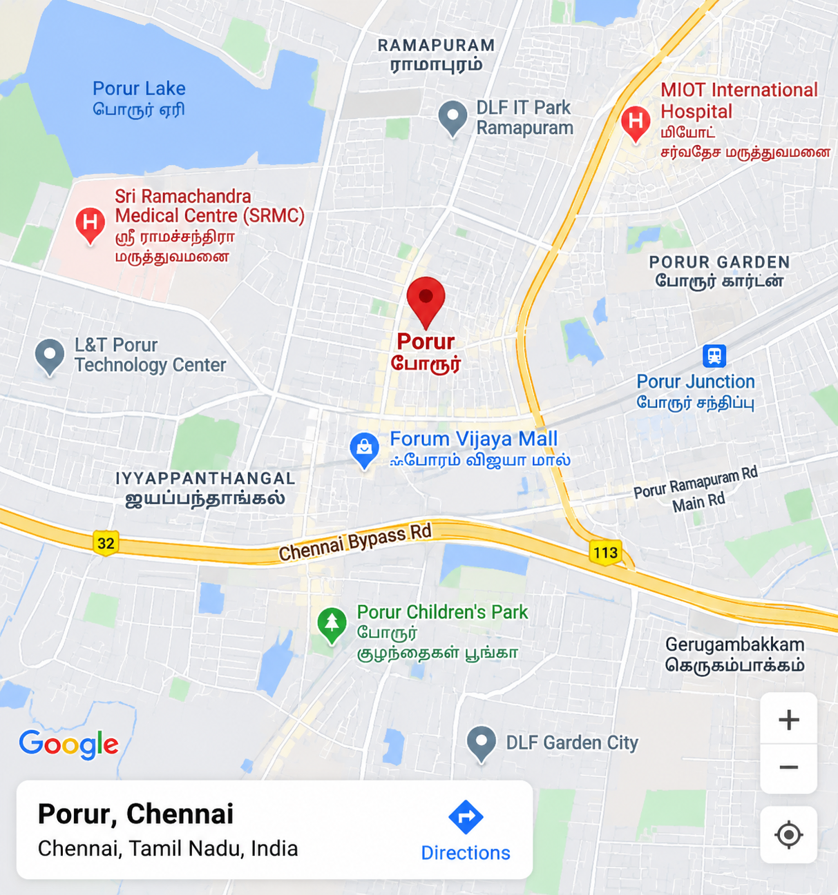

REACT
Front-End & UI Frameworks
HTML5, CSS3, JavaScript (ES6+), TypeScript, React.js, Next.js, Angular 8+, jQuery, Bootstrap, Tailwind CSS, Responsive Web Design.
Build • Lead • Deliver
Full-Stack Developer | React JS, Angular, Python, PHP, Drupal, AEM, Gen AI
Full-Stack Developer with 9+ years of experience designing, building, and maintaining enterprise web applications for banking, insurance, and retail clients.
Let's Build Something Great Together!
Full-Stack Developer with 9+ years of experience designing, building, and maintaining enterprise web applications for banking, insurance, and retail clients.
Hands-on across front-end and back-end engineering with HTML5, CSS3, JavaScript (ES6+), TypeScript, React JS, Next.js, Angular, Python, FastAPI, PHP, CodeIgniter, Node JS, Express.js, and REST API integration, plus deep Content Management System (CMS) experience in Drupal, WordPress, and Adobe Experience Manager (AEM).
Led a 4-member team on a scheduled banking website programme, integrated secure payment gateways for insurance clients, and delivered AI and machine learning products including an AI chatbot, RAG platforms, and a face recognition module. Expertise in fast, high-quality delivery and clear communication across cross-functional Agile teams.
“Turning complex business ideas into scalable, high-impact digital products.”
Continuous Learning, Modern Engineering, Business Results.
HTML5, CSS3, JavaScript (ES6+), TypeScript, React.js, Next.js, Angular 8+, jQuery, Bootstrap, Tailwind CSS, Responsive Web Design.
Node.js, Express.js, Python, FastAPI, PHP, CodeIgniter, RESTful APIs, CRUD Operations, SQLite, SQL, SQLAlchemy, MVC Architecture.
Generative AI, RAG, LLM Integration, Machine Learning, Face Recognition, Vector Databases (Qdrant), AI/ML API Integration.
Adobe Experience Manager (AEM), Drupal, WordPress, Joomla, Magento, Custom Module & Theme Development.
WebSockets, MQTT, Redis, Redis Streams, Frigate, MediaMTX video streaming architecture.
Git, Docker, Kubernetes, CI/CD, GitHub Actions, Agile/Scrum, Jira, UI/UX Design, Technical & Team Leadership, Stakeholder Management.
Complete Skill Set: HTML5, CSS3, JavaScript (ES6+), TypeScript, React.js, Next.js, Angular 8+, Node.js, Express.js, Python, FastAPI, PHP, CodeIgniter, Generative AI, RAG, LLM Integration, Qdrant, Machine Learning, Face Recognition, AEM, Drupal, WordPress, Joomla, Magento, WebSockets, MQTT, Redis, Frigate, Docker, Kubernetes, CI/CD, UI/UX Design, and Team Leadership.
Key product initiatives, client deployments, and leadership recognition.
Innovative Products, Production-Grade Engineering.
Built an AI-powered retail intelligence platform for jewelry stores, combining computer vision, face recognition, AI real-time customer tracking, salesperson analytics, and store-floor intelligence.
Developed an AI/RAG-powered enterprise implementation platform using LLM integration, Qdrant Vector Database, semantic search, knowledge retrieval, and accelerated execution readiness.
Developed an AI chatbot for enterprise CMS platforms (Drupal & AEM), integrating conversational AI, knowledge retrieval, API integration, and platform information discovery.
Architected and developed a full-stack employee productivity and performance platform using REST APIs, database integration, automated scoring, ranking algorithms, and interactive dashboards.
Building products. Leading teams. Shipping results.
Strong foundations. Continuous growth.
Impact beyond standard engineering.
Delivered TrueMeasure AI Audit, CMS CommandCenter, MIIP RAG platform, and InstoreIntelligence retail AI — with CEO townhall recognition.
Promoted to Analyst – Digital Operations, mentoring cross-functional teams, overseeing code reviews, task planning, and client deliveries.
Hands-on architecture with Generative AI, LLMs, Qdrant Vector DB, RAG retrieval pipelines, and machine learning face recognition.
Won Shooting Star Award for fast delivery & team management. Led campus bodies at MCC and Loyola College.
Feel free to reach out. I'm always open to discussing new opportunities, high-impact projects, or tech collaborations.
